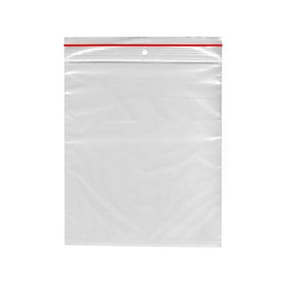

Dodání CD-R wrapů z bscomu do boxu
1. Objednávka přes bscom.cz
Jakmile bude zažádáno dodání wrapů Verbatim z bscomu, je potřeba je objednat od bscomu v tomto systému. Následně doplňovat údaje ve stejném systému jako jsou čísla objednávek, faktur atd... Je možné si i objednat více wrapů a nechat si nějaké skladem přímo, ale je důležité si zajistit, aby se nepromíchaly s klasickými!!

2. Příprava
Wrapy CD-R Verbatim z bscomu nesmí být kvůli speciálnímu číslu SN jen tak náhodně dány do boxu jako ty ostatní! Před dodáním do boxu musí být označeny. Jediný způsob, jak je možné wrapy označit je, že je vložíš PO JEDNOM do samostatných zip-lock sáčků (Případně, pokud se tam nevejdou, použij normální sáček, ale musíš je balit po jednom). Na sáček napiš nebo nalep na papírku / bílém lepítku viditelně text "BSCOM". Jinak je označení neplatné a bude vyžadováno vrácení peněz! Je nutné jej po jednom vkládat do sáčků (nejlépe zip-lock) a na ně napsat nebo nalepit BSCOM!

3. Dodání do boxu
Nyní už jen zbývá sáček / sáčky dodat do boxu a čekat na převzetí a platbu!